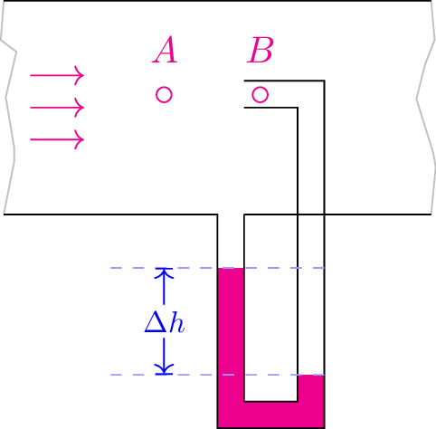

pre.tex
\documentclass[tikz]{standalone}\input{pre.tex}\begin{document}\begin{tikzpicture}
\fill[magenta] (2,0)++(0,-0.5) rectangle ++ (0.25,-1.5);
\fill[magenta] (2.75,0)++(0,-1.5) rectangle ++ (0.25,-0.5);
\fill[magenta] (2,0)++(0,-2) rectangle ++ (1,0.25);
\draw[black!30, decoration={random steps, amplitude=1.5mm}, decorate] (0,0) -- ++(0,2);
\draw[black!30, decoration={random steps, amplitude=1.5mm}, decorate] (4,0) -- ++(0,2);
\draw (0,2) -- ++(4,0);
\draw (0,0) -- ++(2,0) --
++ (0,-2) --
++ (1,0) --
++ (0,2) --
++ (1,0);
\draw (2.25,0) -- ++ (0,-1.75) -- ++ (0.5,0) -- ++ (0,2.75) -- ++(-0.5,0) coordinate (c);
\draw (c) ++ (0,0.25) -- ++ (0.75,0) -- ++(0,-1.25);
\draw (2.25,0) -- ++ (1,0);
\draw[magenta] (1.5,1.12) circle (2pt) node[above, yshift=0.5em] {$A$};
\draw[magenta] (2.4,1.12) circle (2pt) node[above, yshift=0.5em] {$B$};
\draw[magenta,->] (0.25,1) -- ++(0.5,0);
\draw[magenta,->] (0.25,0.7) -- ++(0.5,0);
\draw[magenta,->] (0.25,1.3) -- ++(0.5,0);
% Draw line annotation
% Input:
% #1 Line offset (optional)
% #2 Line angle
% #3 Line length
% #5 Line label
\begin{scope}[xshift=3cm, yshift=-1.5cm]
\lineann[2]{90}{1}{$\Delta h$}
\end{scope}
\end{tikzpicture}\end{document}